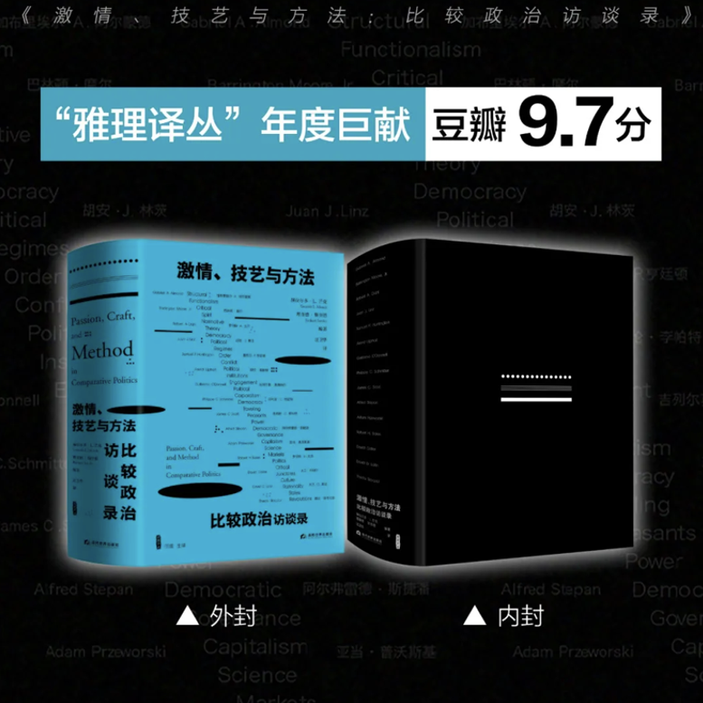
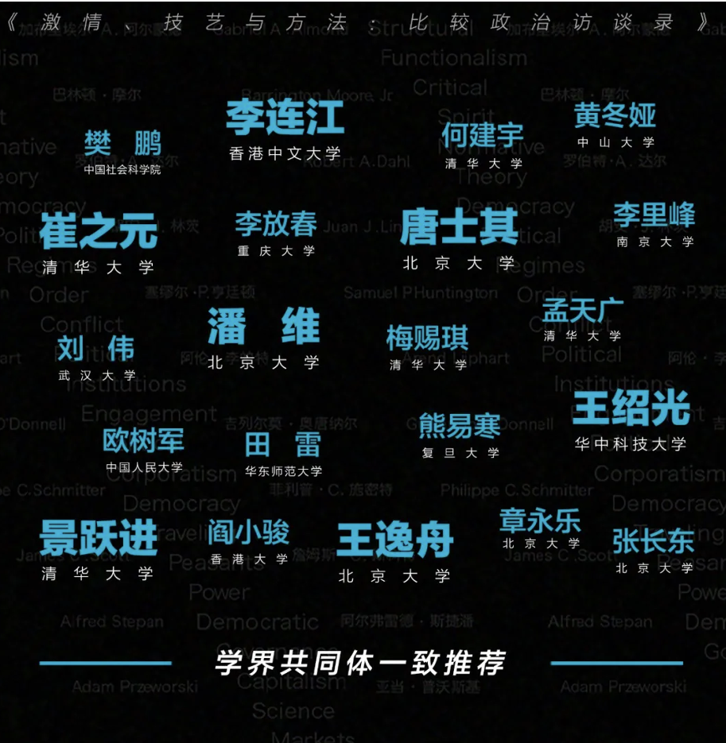
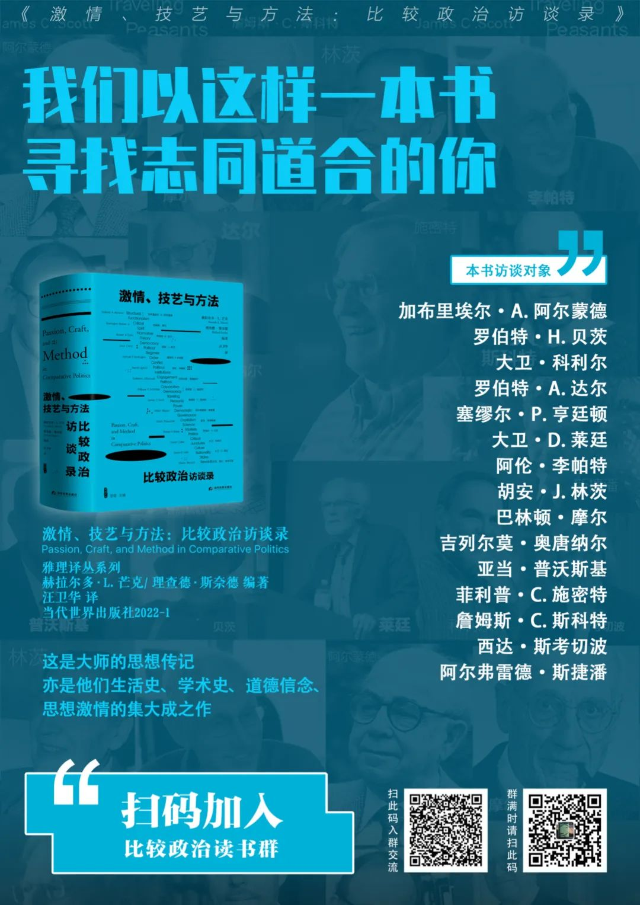

收录于合集
《激情、技艺与方法：比较政治访谈录》
译后记
文 | 汪卫华
北京大学国际关系学院副教授
这本首版于2007年的访谈录几乎就是一部当代美国比较政治研究的“纪传体”学术史，浓缩了比较政治的“黄金时代”。相信读者读完书中十五位“业内大咖”的学思历程以及本书开头两篇长文综述，不仅会对比较政治研究领域的大致轮廓形成更加清晰的认识，更会对政治学的现实关切与研究过程有不少感触。尽管本人从来不觉得比较政治或政治学是所谓“显学”，但我相信，国内从事社会科学任何领域研究和教学工作的同仁，以及未来可能投身学界的研究生们，都可以把这本书当作一面“镜子”，从中得到激励与启发，看到许多实实在在的经验与教训。
受邀移译本书，既属荣幸，亦是大考。尽管译者沉浸政治学多年，且三个阶段的学位论文恰好分属国际政治、比较政治、中国政治三个领域，但翻译起这本巨著来，仍时常感到吃力。一则所学有限，像书中涉及的拉美研究和非洲研究文献，此前两眼一抹黑， “边翻译边恶补”几近常态；二则笔力不逮，原以为访谈文录不会那么“绕”，仔细读了才发现书中大半文字还是“从句套从句”，要顺成流畅的中文表达，考验的实在并非英文阅读能力，而是中文写作能力——尤其是不用翻译体中文写作的能力。
饶是如此，译者也希望尽己所能对得起这本书的价值，所以终究不敢假手于人，宁可慢慢来，自己从头翻到尾。翻译工作只能是业余活动，保证质量难免拖拉，开头两章反复斟酌，竟磨了半年光景。中间又因为本人调动单位，译事停顿了很长时间，到2018年底方告完成。不巧赶上出版大环境变化，译稿又耽搁两年，如今终于能在刘海光兄和田雷教授两位著名的“学界出版人”不懈努力下跟读者见面，着实令人鼓舞，亦需表达歉意。希望这个译本的质量能经得起考验，对得起读者。
政治学是西洋舶来品，学术译著通常都得在两个语言频道上纠结挣扎，这里简单啰唆几句，交待一下自己翻译本书采取的立场和考量。
首先是文体。本书主体部分是十五篇访谈录，但除了阿尔蒙德、摩尔、达尔、亨廷顿这四位的访谈文本相对比较简洁之外，其余访谈中都有不少长篇段落，与一般的学术论著文体相近（或许是经过整理加工的缘故），开头的两篇更是标准的学术论文。译者在翻译时，在“存真”的前提下，以“可读”为原则，尽可能把一些英文长句适当截断，力求读起来顺畅，同时也希望最大限度保留其中的一些口语化表达，力求看上去活泼。译者试图在严格遵照原义的前提下，让译本更符合中文文法和文体习惯。
其次是译名。英文政治学术语与中文名词各自有其“语义场”，大多数情况下不能“严丝合缝”。比如中文“专制”一词，可以对译despotism、absolutism、dictatorship、autocracy乃至tyranny，各自词源有异、语境不同。如果是在通俗读物中，或同一论著用词一致，那么不加区分地说成“专制”亦无不可。但在这本书中，不同年代、不同作者的使用习惯是不一致的，这就需要把这些不一样的英文术语尽可能区分开。摩尔的名著译为《独裁与民主的社会起源》，就是基于这层考虑——dictatorship和autocracy按其词源，前者早出，指古罗马“独裁官”之治，中译马列著作习称“专政”，也是考虑到它区别于“专制”；autocracy则是中世纪才出现的按照古希腊文构词法造出来的说法，所谓“一人之治”，亦“独裁”也，但在近年的英文政治学文献中基本都当作了与“民主”相对的“不民主”政体的统称。至于“专制”，严格来说对应的是despotism，是自古以来欧洲人对近东、中东乃至远东异域政制的污名。书中涉及的一些著作已有中译本，译者不采用市面通译，主要是考虑到这本书中的术语译名既要一致、又需准确。另如polity，中文既有“政体”（政府组织形式）也有“政治体”（具有共同政治认同的社会群体）的意思，国内一些学者论著往往不加分辨都称为“政体”，译者认为这样不妥当，且不合乎中文里“政体”既定的涵义，所以在翻译时将所有明显是指“政治体”的地方都译为“政治体”，只有Polity IV这个数据库，因其一语双关，还是说成“政体”。类似的还有regime一词，只有regime type可称为“政体”，regime单用则应译为“政权”或“体制”（如监管体制）更准确——当然除了国际关系领域约定俗成的“国际机制”。
另一种情况则是现有中译说法在笔者看来不妥当，便刻意改换了译法。比如李普塞特和罗坎1967年主编的那本文集中，cleavage往往被国内学者译作“分裂”，其实那是指“裂而未分”的状态，社会群体之间有客观或主观存在的界限，但未必就分崩离析，说成“分裂”不但过于强烈，且无法和divided区别开，所以译者称为“裂隙”；alignment往往被译作“结盟”或“联盟”，更不妥当，它不是coalition，而是说选民选择支持哪个政党，也就是“向谁看齐、站哪一条队”，因此译者改译为“站位”。亨廷顿的《美国政治》副标题the promise of disharmony，国内最早的中译本译作《失衡的承诺》，两词皆误，应为“不和谐的预兆”，promise of sth. 某某的预兆；且亨廷顿用这个promise显然亦有基督教里所谓“应许”的意味，实在不是中文里“承诺”的意思。再如将李帕特所用的accommodation译为“迁就”，consociationalism译为“协合主义”［协（同）合（作）］，也是如此考量。译者希望全书译名尽可能不发生相互混淆，尽可能不多加括号，并能最大限度地让中文说法贴合英文所指，至于效果如何，尚请读者评判。
当然，也有一些说法，如法团主义、民粹主义，本人并不赞成这样的译名；但一来原词原本就在不同语境下有不同所指，二来中文里积习日久，不妨从众。还有commitment一词，中文里不管是“本体论承诺”还是“可信承诺”，皆说“承诺”。其实“本体论承诺”的讲法源自蒯因，强调把研究对象客观上是什么的“本体论事实”与研究者们在语言约定意义上把它当作是什么的“预设立场”分开来，中文说“本体论承诺”实在有些不知所云。但既然国内语言哲学界也是这么用了，译者也姑且从众——当然，有必要多说一句，有些中文政治学译著中的“承诺”其实是“责任”或“举动”罢了。至于人名，译者皆按照新华社译名手册的通例译出，只有普沃斯基和李帕特两位，名字中皆有不发音的字母，前者音近“切沃斯基”，但我还是从众写作“普沃斯基”，后者则不采用“利普哈特”的说法，译作“李帕特”。
再次是夹注。因本书原采用了“作者—年代”引注体例，如果按照通行的译著规则，将英文书名、术语等统统加括号列出来，势必影响读者的阅读体验。考虑到译者已将正文之后的人名索引、名词索引完整译出，亦附有征引文献，正文中除了首次出现的人名、非英文的专名及少量可能混淆或需要列明的英文原词以括号夹注方式注明之外，一般的英文书名和专业名词不再另行注明。另外，正文中有些译者认为需要补充说明的地方，加了一些“译者注”供读者参考。
最后，本书只在若干中文文义上确有必要的地方使用了“比较政治学”来翻译comparative politics，其余绝大多数情况下，包括本书书名，译者坚持使用了“比较政治”这个称谓。译者认为，比较政治与本国政治、国际关系皆是政治学这个“学科”之下经验研究的分支领域；比较政治与本国政治皆以国内政治现象为主要研究对象；比较政治被理解为对外国国内政治的研究，只不过是美国政治学特殊发展历程中形成的特定惯例，并不存在什么独立的“比较政治学科”。20世纪50年代之后，比较政治研究才因为冷战时代的现实需求和美国政治研究领域“行为主义革命”的学科内部冲击，逐渐转向“科学化”，成为政治学各分支研究领域中理论贡献最为显著的研究领域。译者并不同意“比较政治学”是以“比较方法”界定的“学科”的说法。“比较政治”这个名词只不过是“比较政府”“比较公法”时代，英国历史学家弗里曼受比较语文学的影响生造出来的一个称谓，在美国的政治学“学科化”过程中被政治学家们逐步接受。19世纪末20世纪初，随着美国政治学家对本（美）国政治研究的强化，比较政治才逐渐在美国的政治学建制中被缩减为对“外国政治”的研究。这个称谓的起源与20世纪50年代之后的“科学”或“科学方法”没有什么关系，它只不过是19世纪末20世纪初美国政治学“本土化”的副产品，而后沿袭为美国的政治学建制中区别于本国政治研究的、对外国国内政治的研究。20世纪50年代之后比较政治研究的繁荣，就是政治学自身的发展，本国政治与比较政治的人为两分早已不合时宜。尤其是伴随着全球化的深入发展，全球性问题和跨国政治现象大量涌现，已经使得国内政治和国际关系的两分法变得愈发可疑。21世纪业已进入第三个十年，更没有必要用“比较政治学”这顶帽子来彰显“学科意识”，相反，比较政治研究的进步将会越来越依赖跨学科、多学科的知识交叠。对于比较政治“学”的名目和演生史，译者另有长文专门讨论，在此不再赘述。
如上说明，其实也反映了译者在目下的学术业绩考评体制下，仍愿不惜工本承担本书翻译工作的深层关切——翻译不只是为了向别人学习，而是给建设中国自己的学术话语作必要的知识储备。尤其是对于政治学这样的“西洋舶来品”，翻译西方学术著作不是为了传播西学、仰望崇拜，而应作镜鉴、反躬自省。中国有三千年未尝中断的、丰富的政治实践与政治思想，但自20世纪80年代国内政治学重建以来，我们的政治学话语系统远未实现“自如”。四十年后的当下，中国社会科学学术愿景，既非回归“乾嘉考据”，亦非只管“放眼拿来”。
译事维艰，学养有限，虽则译稿完成之后本人又完整地校改过两遍，且在清样排出后在编辑校改基础上又有不少改动，但一定还会存在不少疏漏和译文考虑不周之处，还请方家不吝指正。
本书翻译工作也是译者承担的北京大学学科建设项目“比较政治的学科流变与中国经验”的一部分，亦得到北京大学国际关系学院领导和同事们的大力支持和帮助，在此一并致谢。
2021年2月6日 记于北京大学

激情、技艺与方法：比较政治访谈录
（雅理译丛）
[美]赫拉尔多·L. 芒克 [美]理查德·斯奈德/编著
汪卫华/译
当代世界出版社2022-1

赠书要求
在北京时间2021年12月27日23:59之前留言您对作者或对政文观止Poliview的想法或者建议（不少于100字），我们将本着公平公正的原则抽出两位幸运读者寄送赠书（限中国大陆地区）。我们真挚地希望被抽中的幸运读者能在读完这本书后写下书评发给我们，共同交流，汇总成文（本次赠书活动的解释权在政文观止Poliview）。
没有抽中的读者朋友也请勿伤心抑或担心，本书在当当、淘宝、京东等各大平台均有销售，可点击下方链接跳转购买。
读书群
出版方为此书专门建了个群，并将于12月27号举办直播活动，活动邀请了译者和几位中青年学者对谈此书，欢迎关注！读书群二维码在下方海报中，欢迎扫码入群。

编辑：韩丽嵘